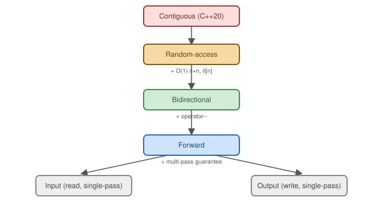

Iterators and Algorithms
|
This content was generated with the assistance of AI and should be verified against the official documentation before being relied on in production. |
Iterator Categories
Algorithms are written against the weakest iterator category they need, so they work across the widest range of containers. Each category is a strict superset of the guarantees below it:

-
Input — single-pass, read-only (
std::istream_iterator). -
Output — single-pass, write-only (
std::ostream_iterator,std::back_inserter). -
Forward — multi-pass, read (
std::forward_list::iterator). -
Bidirectional — forward plus
--(std::list::iterator,std::map::iterator). -
Random-access — bidirectional plus
O(1)it + n/it[n](std::vector::iterator, raw pointers). -
Contiguous (C++20) — random-access plus a guarantee the elements are laid out contiguously in memory (
std::vector::iterator,std::array::iterator, but notstd::deque::iterator).
begin/end and Non-Member Access
#include <vector>
#include <iterator>
std::vector<int> v = {1, 2, 3};
auto it1 = v.begin(); // member function
auto it2 = std::begin(v); // free function -- also works on a raw C array, which has no .begin() member
auto it3 = std::cbegin(v); // always a const_iterator, even if v is non-constRange-for (see Control Flow) uses the non-member
begin/end internally, found via ADL — which is exactly why it works on raw arrays too.
<algorithm> and <numeric>
#include <algorithm>
#include <numeric>
#include <vector>
#include <iostream>
int main() {
std::vector<int> v = {5, 3, 1, 4, 2};
std::sort(v.begin(), v.end()); // {1, 2, 3, 4, 5}
auto it = std::find(v.begin(), v.end(), 3); // iterator to the found 3
bool has4 = std::binary_search(v.begin(), v.end(), 4); // requires a sorted range: true
auto maxIt = std::max_element(v.begin(), v.end()); // iterator to 5
std::vector<int> a = {1, 3, 5}, b = {2, 3, 4}, result;
std::set_intersection(a.begin(), a.end(), b.begin(), b.end(), std::back_inserter(result)); // {3}
std::vector<int> seq(5);
std::iota(seq.begin(), seq.end(), 1); // {1, 2, 3, 4, 5}
std::fill(seq.begin(), seq.end(), 0); // {0, 0, 0, 0, 0}
std::generate(seq.begin(), seq.end(), [n = 0]() mutable { return n++; }); // {0, 1, 2, 3, 4}
int sum = std::accumulate(v.begin(), v.end(), 0); // 15
(void)it; (void)has4; (void)maxIt; (void)sum;
for (int x : result) std::cout << x << ' ';
}Insert Iterators
std::back_inserter/std::front_inserter/std::inserter adapt an output iterator so an algorithm can grow a
container instead of overwriting a fixed range — used with std::set_intersection above, and idiomatic
anywhere an algorithm’s output size isn’t known ahead of time:
#include <algorithm>
#include <vector>
#include <iterator>
std::vector<int> source = {1, 2, 3};
std::vector<int> destination;
std::copy(source.begin(), source.end(), std::back_inserter(destination)); // grows destination as needed,
// instead of requiring it to
// already have 3 elementsWriting a Random-Access Iterator
#include <iterator>
#include <cstddef>
#include <compare>
class IntRangeIterator {
public:
using iterator_concept = std::random_access_iterator_tag;
using iterator_category = std::random_access_iterator_tag;
using value_type = int;
using difference_type = std::ptrdiff_t;
IntRangeIterator() = default; // random-access iterators must be default-constructible
explicit IntRangeIterator(int value) : value_(value) {}
int operator*() const { return value_; }
int operator[](difference_type n) const { return value_ + static_cast<int>(n); }
IntRangeIterator& operator++() { ++value_; return *this; }
IntRangeIterator operator++(int) { auto copy = *this; ++value_; return copy; }
IntRangeIterator& operator--() { --value_; return *this; }
IntRangeIterator operator--(int) { auto copy = *this; --value_; return copy; }
IntRangeIterator& operator+=(difference_type n) { value_ += static_cast<int>(n); return *this; }
IntRangeIterator& operator-=(difference_type n) { value_ -= static_cast<int>(n); return *this; }
friend IntRangeIterator operator+(IntRangeIterator it, difference_type n) { return it += n; }
friend IntRangeIterator operator+(difference_type n, IntRangeIterator it) { return it += n; }
friend IntRangeIterator operator-(IntRangeIterator it, difference_type n) { return it -= n; }
friend difference_type operator-(const IntRangeIterator& a, const IntRangeIterator& b) {
return a.value_ - b.value_;
}
bool operator==(const IntRangeIterator&) const = default;
auto operator<=>(const IntRangeIterator&) const = default;
private:
int value_ = 0;
};
static_assert(std::random_access_iterator<IntRangeIterator>); // the tag is a promise -- check itThe full set matters: the random_access_iterator_tag above is a claim, and anything that trusts it
(std::sort over such a range, std::prev, or the std::random_access_iterator concept itself) breaks if an
operation is missing. Dropping any of --, +=, -=, operator[], post-increment or the relational
operators makes the static_assert fail — which is exactly why it is worth writing down.
C++20’s std::iterator_traits can deduce most of these members automatically for a well-formed iterator,
reducing the boilerplate above — see Ranges and Views for
the concept-based (std::input_iterator, std::random_access_iterator, …) way ranges validate an iterator
type instead.
std::erase_if
C++20 unifies the "erase matching elements" idiom (previously the notoriously named erase-remove idiom) into one free function per container category:
#include <vector>
#include <algorithm>
std::vector<int> v = {1, 2, 3, 4, 5, 6};
std::erase_if(v, [](int x) { return x % 2 == 0; }); // {1, 3, 5} -- replaces
// v.erase(std::remove_if(v.begin(), v.end(), pred), v.end())Iterators in Practice: Categories, Algorithms and Invalidation
An iterator is any type that behaves like a pointer into a sequence. The category of an iterator, determined by
the operations it supports, decides which algorithms may use it and with what complexity: std::sort needs random
access, std::list provides only bidirectional iterators, and therefore list::sort is a member function.
single pass read"] --> FW["forward iterator
multi-pass: forward_list, unordered_*"] FW --> BD["bidirectional
also --it: list, map, set"] BD --> RA["random access
also it + n, it[n]: deque, vector"] RA --> CT["contiguous
elements adjacent in memory: vector, array, string"]
#include <algorithm>
#include <forward_list>
#include <iterator>
#include <list>
#include <numeric>
#include <print>
#include <string>
#include <vector>
struct Book {
std::string title;
int year;
int copies;
};
// A minimal forward iterator over a C array of ids, written by hand to show the required operations.
class IdIterator {
public:
using iterator_category = std::forward_iterator_tag;
using value_type = int;
using difference_type = std::ptrdiff_t;
using pointer = const int*;
using reference = const int&;
IdIterator() = default;
explicit IdIterator(const int* p) : p_(p) {}
reference operator*() const { return *p_; }
IdIterator& operator++() { ++p_; return *this; }
IdIterator operator++(int) { auto t = *this; ++p_; return t; }
bool operator==(const IdIterator&) const = default;
private:
const int* p_ = nullptr;
};
static_assert(std::forward_iterator<IdIterator>);
int main() {
std::vector<Book> shelf{{"Dune", 1965, 2}, {"Emma", 1815, 0}, {"Neuromancer", 1984, 5}, {"Alien", 1979, 1}};
// sort + custom comparator; stable_sort preserves order of equal elements.
std::ranges::sort(shelf, {}, &Book::year);
for (const auto& b : shelf) std::print("{}({}) ", b.title, b.year);
std::println("");
// lower_bound on sorted data: O(log n) on random-access iterators.
auto it = std::ranges::lower_bound(shelf, 1970, {}, &Book::year);
std::println("first book from 1970: {}", it->title);
// remove-erase idiom vs std::erase_if (C++20).
std::vector<Book> copy = shelf;
auto removed = std::erase_if(copy, [](const Book& b) { return b.copies == 0; });
std::println("erase_if removed {}, {} left", removed, copy.size());
// accumulate / transform_reduce / partial_sum.
int total = std::accumulate(shelf.begin(), shelf.end(), 0, [](int s, const Book& b) { return s + b.copies; });
std::println("total copies: {}", total);
std::vector<int> copies;
std::ranges::transform(shelf, std::back_inserter(copies), &Book::copies);
std::vector<int> running(copies.size());
std::partial_sum(copies.begin(), copies.end(), running.begin());
std::print("running totals:");
for (int r : running) std::print(" {}", r);
std::println("");
// Iterator categories: list is bidirectional (no std::sort), forward_list is forward-only.
std::list<int> l{3, 1, 2};
l.sort(); // member sort: the algorithm needs random access
std::println("list sorted: {} {} {}", *l.begin(), *std::next(l.begin()), l.back());
std::forward_list<int> f{1, 2, 3};
std::println("distance via forward iterators: {}", std::distance(f.begin(), f.end()));
int ids[] = {7, 8, 9};
int sum = 0;
for (IdIterator i(ids), e(ids + 3); i != e; ++i) sum += *i;
std::println("custom iterator sum: {}", sum);
// Dangling iterator after erase: use the returned iterator.
std::vector<int> nums{1, 2, 3, 4, 5, 6};
for (auto i = nums.begin(); i != nums.end();) {
if (*i % 2 == 0) i = nums.erase(i); else ++i;
}
std::println("odds only: {}", nums.size());
}$ clang++ -std=c++23 -Wall -Wextra algos.cpp -o algos
$ ./algos
Emma(1815) Dune(1965) Alien(1979) Neuromancer(1984)
first book from 1970: Alien
erase_if removed 1, 3 left
total copies: 8
running totals: 0 2 3 8
list sorted: 1 2 3
distance via forward iterators: 3
custom iterator sum: 24
odds only: 3-
std::ranges::sort(shelf, {}, &Book::year)sorts by a projection: the third argument is applied to each element before comparing, so no comparator lambda is needed.lower_boundwith the same projection does a binary search, O(log n) comparisons on random-access iterators but O(n) iterator steps on a list. -
The running totals start with
0 2 3 8rather than2 ...because the shelf was re-sorted by year first, and the book with no copies (Emma, the oldest) comes first. Always remember an earlier sort changed the sequence. -
std::erase_if(container, pred)replaces the erase-remove idiom and returns the number of elements removed.std::remove_ifalone only moves the survivors forward and leaves the container’s size unchanged. -
IdIteratoris the minimum for a forward iterator: the five type aliases, dereference, both increments and equality, plus a default constructor. Thestatic_assert(std::forward_iterator<IdIterator>)checks the concept at compile time, so a missing member is reported where it is defined and not deep inside an algorithm. -
The last loop shows the invalidation rule:
eraseinvalidates iterators at and after the erased element, so use the iterator it returns, and increment only in the branch that did not erase.
Prefer the algorithms to hand-written loops when one exists: std::ranges::any_of, count_if, find_if,
transform, accumulate. They name the intent, they cannot go out of bounds by an off-by-one in the loop, and an
implementation may parallelize them with an execution policy (see
Async, Futures, and Atomics).